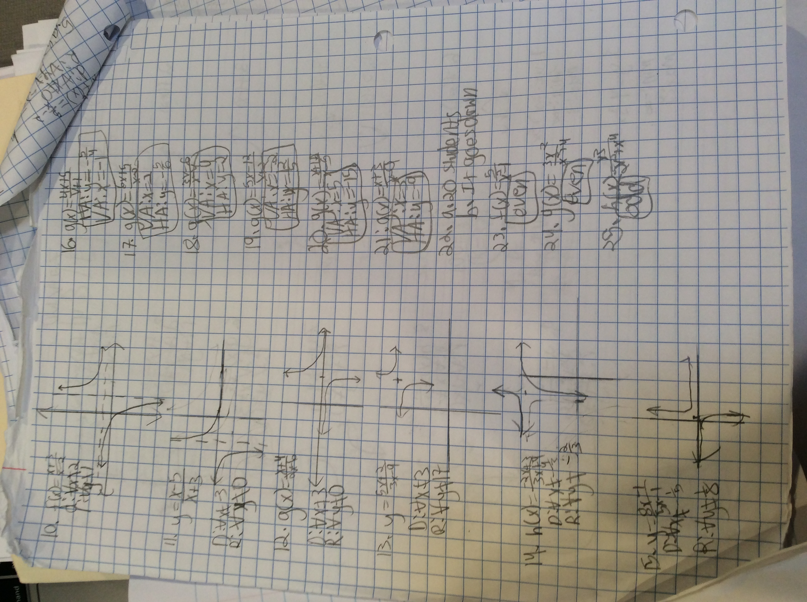

The artifact that I chose for Literature was my Scarlet Letter poem. This represented my strength. I put my mind to writing this and planned out the writing of it and produced a higher quality project.
The artifact that I chose for Social Studies was my
The artifact that I chose for Spanish was my Preterite v. Imperfect test. The reason I chose this was because I studied hard for it, and got one of the better grades in the class.
The artifacts that I chose for Math were my notebook, a test, and a homework packet. These represent my improving organization on my homework and notes translating into better results on my tests. A success that I have had in Math was working on log functions. These were my main stuggle last year, and this year I have improved on them.
 Back